军官团
原页面：Officer corps
管理顾问与理论家，选择你的陆军、海军与空军精神，并解锁学说。
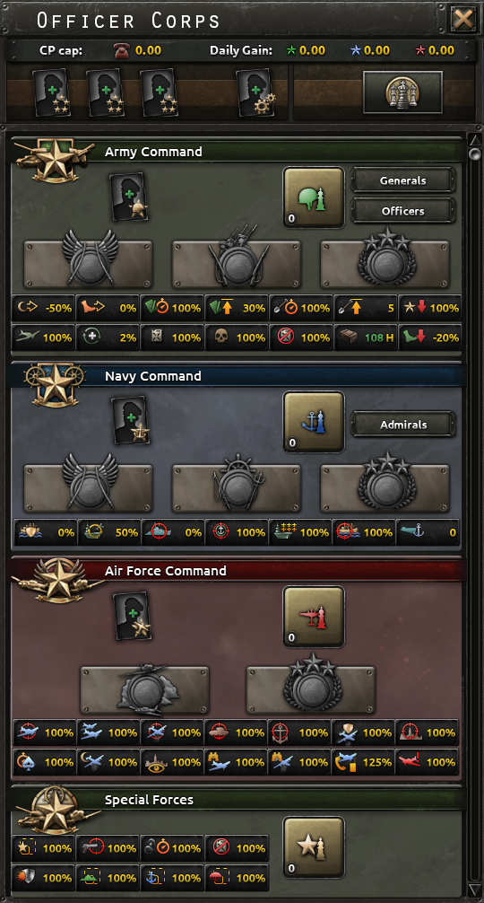
军官团标签页概述武装力量的整体状况，并可用于管理军事领导层与作战方式。它于补丁 1.11
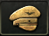
（Barbarossa）中加入。在此标签页中，玩家可以查看自己已分配的指挥点数，以及每日陆军、海军和空军经验获取量。将鼠标悬停在其中任意一项上都会显示包含更多细节的提示框。
你可以在此标签页查看和编辑军事顾问，就像在政治标签页中一样。
此外，该区域还会显示影响整个陆军、海军和空军的修正，例如陆军补充率、最大计划值、出击效率、空中支援效率等。
不过，此标签页的主要用途是查看并解锁陆军、海军和空军学说。拥有 一步不退的玩家还可以用全新的“精神”强化其陆军、海军和航空队。陆军和海军指挥部最多各可有三个精神，空军指挥部最多可有两个。可选选项众多，能组合出许多不同的搭配。还有一些精神只能根据已选择的学说，甚至国家的意识形态来解锁。所有这些选择都需要花费数量不等的陆军、海军或空军经验。学说与精神带来的加成和减益会立即生效。
一步不退的玩家还可以用全新的“精神”强化其陆军、海军和航空队。陆军和海军指挥部最多各可有三个精神，空军指挥部最多可有两个。可选选项众多，能组合出许多不同的搭配。还有一些精神只能根据已选择的学说，甚至国家的意识形态来解锁。所有这些选择都需要花费数量不等的陆军、海军或空军经验。学说与精神带来的加成和减益会立即生效。
可以接触师级指挥官的玩家（拥有 唯有鲜血）还可以打开一个窗口，用于查看和晋升这些军官。
唯有鲜血）还可以打开一个窗口，用于查看和晋升这些军官。
最高统帅部
将领和海军上将达到 4 级后可成为军事顾问。4 级时为专家，6 级时成为大师，8 级时成为天才。其已获得的特质决定了他对最高统帅部的贡献。
| 最高统帅部特质 | 所需指挥官特质 | 加成（专家/大师/天才） |
|---|---|---|
| 陆军重整 | +4%/+8%/+12% 师恢复速度 | |
| 骑兵军官 | +5%/+10%/+15% 骑兵攻击与防御 | |
| 步兵军官 | +5%/+10%/+15% 步兵攻击，+10%/+15%/+20% 步兵防御 | |
| 陆军后勤 | -4%/-8%/-12% 师损耗 | |
| 构筑工事 | +4%/+8%/+12% 构筑工事速度 | |
| 装甲 | +5%/+10%/+15% 装甲攻击与防御 | |
| 突击队 | 特种部队 +5%/+10%/+15% 攻击 +3/+6/+10 特种部队容量 | |
| 两栖突击 | +5%/+10%/+15% 海军登陆速度 | |
| 合成兵种 | +5%/+10%/+15% 摩托化与机械化攻击与防御 | |
| 火炮 | +10%/+15%/+20% 火炮攻击，+5%/+10%/+15% 火炮防御 | |
| 隐蔽 | 伪装专家 | -5%/-10%/-15% 敌方空中支援 |
| 反潜 | +10%/+15%/+20% 潜艇探测 | |
| 护航舰 | +5%/+10%/+15% 护卫舰攻击，+10%/+15%/+20% 护卫舰防御 | |
| 航空母舰 | +5%/+10%/+15% 出击效率 | |
| 主力舰 | +5%/+10%/+15% 主力舰攻击与防御 | |
| 潜艇 | 鱼雷专家 | +10%/+15%/+20% 潜艇攻击，+5%/+10%/+15% 潜艇防御 |
| 海军防空 | +8%/+15%/+20% 海军防空攻击 | |
| 对海打击 | 鱼雷轰炸机 | +2%/+3%/+5% 对海轰炸、对海瞄准和对海机动 |
| 舰队后勤 | +5%/+10%/+15% 海军最大航程系数 | |
| 顾问特质 | 所需指挥官特质 | 加成（专家/大师/天才） |
|---|---|---|
| 陆军进攻 | +5%/+10%/+15% 师攻击 | |
| 构筑工事 | -2%/-4%/-6% 动员速度，+3/+5/+7 最大构筑工事 | |
| 陆军改革者 | +5%/+10%/+15% 陆军经验 | |
| 陆军计划 | +5%/+10%/+15% 计划速度 | |
| 陆军防御 | +5%/+10%/+15% 师防御 | |
| 陆军机动 | +5%/+10%/+15% 师速度 | |
| 陆军组织度 | +4%/+8%/+12% 师组织度 | |
| 陆军士气 | -3%/-6%/-9% 非战斗缺补给惩罚 | |
| 陆军训练 | 授权专家 | -5%/-10%/-15% 师训练时间 |
| 顾问特质 | 所需指挥官特质 | 加成（专家/大师/天才） |
|---|---|---|
| 海军机动 | +5%/+10%/+15% 海军速度 | |
| 商业袭击 | 隐蔽专家 | +10%/+15%/+20% 运输船队袭击效率 |
| 海军改革者 | 安全第一 | +5%/+10%/+15% 海军经验 |
| 海军航空 | 俯冲轰炸机 | +3%/+6%/+10% 航母海军航空攻击，+3%/+7%/+12% 航母海军航空瞄准，+4%/+8%/+15% 航母海军航空机动 |
| 决战 | 神射手 | +5%/+10%/+15% 主力舰与护卫舰攻击与防御 |
学说
学说是让国家专精其陆军、海军和空军的科研路线。每种学说的基础花费为 100 点对应经验，该花费可由精神、顾问以及来自焦点、事件或决议的特殊加成修正。
偏好战术
一个国家的偏好战术可以在军官团处花费 20[1]指挥点数设置。这会提高 指挥官在指挥一个陆上战斗时选择该战斗战术的概率。
指挥官在指挥一个陆上战斗时选择该战斗战术的概率。
精神
不要与以下内容混淆： 国家精神
陆军精神
军校精神
这些精神为陆上指挥官提供加成，例如提高特定特质的经验获取、提升获得属性的概率，或降低招募花费。
| 精神（消歧义） | 效果 | XP | 前置条件 |
|---|---|---|---|
大胆进攻 俗话说得好：最好的防守就是进攻。 |
军官：升级时有50% 概率获得+1 攻击。 | 20 | |
顽强防御 他们休想通过！ |
军官：升级时有50% 概率获得+1 防御。 | 20 | |
周密准备 战争就是混乱，但混乱是可以预先准备的。 |
军官：升级时有50% 概率获得+1 计划，+1 后勤。 | 20 | |
精英中的精英 很少有人具备带领士兵上战场的能力。具备赢得这场战斗能力的人则更少。 |
|
20 | |
军校奖学金 任何人都不应仅仅因为缺钱而无法报效国家。 |
|
20 | |
政治忠诚 一支不可靠的军队，对它本应保卫的国家本身就是一个威胁。 |
|
20 | |
富于创造的领导 能被预测的将领就是被击败的将领。 |
|
20 | |
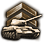 拥抱未来 无论未来的战斗在哪里打响，装甲部队都将发挥决定性作用。 |
|
20 | 机动战争 |
工程学校 挖一条像样的战壕涉及大量科学。 |
|
20 | 优势火力 |
战区训练 有些军官可能会「入乡随俗」，但本地人非常擅长在自己熟悉的地形上作战。 |
|
20 | 大战略 |
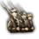 战场女王 步兵是战场上的女王，而女王想去哪儿就去哪儿。 |
|
20 | 大规模突击 |
灵活的军官 新一代军官将引领挪威军队走向胜利，因为他们能学到的远不止积灰的书籍和古板的和平时期教授所讲的内容。 |
|
20 | |
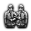 黄埔优先 国民党的黄埔军校掌握着军中新兵招募与晋升的权力。它虽然并非全无效率，却包含着大量制度化的腐败。 |
|
20 | |
英雄崇拜 从古至今，士兵与平民都会缅怀同胞的牺牲。 |
|
20 | 大战略 |
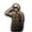 职业军官团 我们是职业军人，而战争就是我们的职业。 |
|
20 |
陆军精神
这些精神为陆军提供通用加成，或可用于专精特定营类型。
| 精神（消歧义） | 效果 | XP | 前置条件 |
|---|---|---|---|
高级工程兵部队 判断一个人的能力与品格，最好的办法就是给他一把铁锹和一天时间，看他能用它做出什么有用的事。 |
35 | ||
正统传承 优秀的将领可以培养，但伟大的将领必须天生。某种意义上，就像马一样。 |
35 | 大战略或乘马步兵 | |
解除指挥职务 军队的存在不是为了满足将领的自尊心。 |
|
35 | |
意识形态忠诚 不能指望一个没有正确意识形态的人在战斗中取得正确的结果。 |
|
35 | |
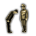 国家服务于军队 国家的目的就是对他国发动战争。其他一切要么是为战争服务，要么就是无用的干扰。 |
|
35 | |
摩托化推进 打击更快，推进更远，赢得更彻底！ |
35 | 机动战争 | |
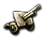 压倒性火力 如果火炮没能帮你赢得战斗，那说明你用得还不够多。 |
35 | 优势火力 | |
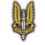 矛尖 夜里的匕首往往比白天的长剑更有效。 |
35 | 大战略 | |
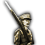 刺刀威力 说到底，坦克或飞机守不住一寸土地。 |
35 | 大规模突击 | |
卓越传承 我们各团的历史与功绩，是士兵英雄气概的明证。通过惯常地表彰伟大功绩，每个人都可能向往同样的伟大。 |
|
35 | |
就地取粮 用自己的武器消灭敌人固然好，但用敌人自己的武器消灭他更好。 |
|
35 | 大规模突击 |
补贴合同 虽然从长远来看，用坦克取代马匹是可取的，但不能以国民经济崩溃为代价。 |
35 | 机动战争或装甲骑兵不妥协，不投降 | |
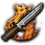 反抗精神 一个民族除非自己承认被征服，否则就不会被征服。 |
|
35 | 大规模突击或游击战或 |
干预专家 敌人的敌人就是我的朋友。 |
|
35 | 优势火力或远征作战 |
军团传承 |
|
35 |
师指挥精神
这些精神为陆上战斗提供加成，并提高某些战斗战术被使用的概率
| 精神（消歧义） | 效果 | XP | 前置条件 |
|---|---|---|---|
静态战 战壕作业从来没有「过多」这回事。只有「不足」和「勉强够用」。 |
|
50 | 大战略或一战步兵 |
灵活编组 重要的是把事情办成，而不是一字不差地执行命令。 |
|
50 | 机动战争或渗透战术 |
积极侦察 如果你想知道对方在干什么，就直接过去问他们！ |
|
50 | 机动战争 |
预备役军官 并非每个人都需要以军人为职业。但在战争时期，他们仍然可以报效国家。 |
|
50 | 优势火力 |
胜利或死亡 光荣地死去，胜过在战败的耻辱中苟活。 |
|
50 | 大规模突击 |
机动战 一场体面、文明的战争更像下棋，而不是打架斗殴。既然能绕过敌人，何必与他硬拼？ |
|
50 | 机动战争 |
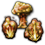 硝烟与炮火 移动弹幕射击在压制敌人还击方面出奇地有效。 |
|
50 | 优势火力 |
后勤专注 部队可以勒紧裤腰带，但坦克必须有油。 |
|
50 | 大战略 |
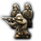 战役预备队 永远要留一手。永远。 |
|
50 | 大规模突击 |
诸兵种反坦克防御 装甲突破随时可能在任何地方发生。战争之神只帮助那些自助的人。 |
|
50 | 优势火力或坦克歼击部队 |
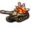 直接火力支援 把炮口摇到零仰角，用直接瞄准具向敌人开火！ |
|
50 | 优势火力或自行火炮支援 |
快速放列 再强的火力，如果放在错误的地方也毫无意义。 |
|
50 | 优势火力或飞行炮兵 |
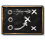 临机应变 更快理解、更快思考、更快行动——这就是胜利的关键。 |
|
50 | 机动战争 |
海军精神为海军将领、海战以及海军科研与设计提供加成。
这些精神为海军将领提供加成，例如提高特定特质的经验获取、提升获得属性的概率，或降低招募花费。
| 精神（消歧义） | 效果 | XP | 前置条件 |
|---|---|---|---|
灌输进攻精神 进攻，进攻，再进攻！ |
海军将领：升级时有50% 概率获得+1 攻击 | 20 | |
有分寸的克制 经过慎重考虑…… |
海军将领：升级时有50% 概率获得+1 防御 | 20 | |
通信训练 要让每个人都尽到自己的职责，他就必须知道自己的职责是什么。 |
海军将领：升级时有50% 概率获得+1 机动和 +1 协同 | 20 | |
大舰队 大规模战术训练。 |
|
20 | 存在舰队 |
运输船队作战 商船船队需要特殊的战术与训练。 |
|
20 | 贸易封锁 |
一体化航空兵 空中与海上单位之间的密切合作至关重要！ |
|
20 | 基地打击 |
精英中的精英 激烈的竞争与严格的选拔，才能培养出我们想要的舰长。 |
|
20 | |
军校奖学金 关键就在于给合适的人发光的机会。 |
|
20 | |
舰到岸登陆训练 任何陆基火炮都无法与数万吨海军钢铁所能带来的火力相提并论。 |
|
20 | 基地打击或舰炮火力支援 |
坚守岗位 只要还有一个螺旋桨在转、还有一门炮在水线以上，我们就仍在战斗。 |
|
20 | 贸易封锁或护卫支援重心 |
这些精神为科研速度、设计花费、修理与改装速度或经验获取提供加成。
| 精神（消歧义） | 效果 | XP | 前置条件 |
|---|---|---|---|
青年学派 驱逐舰才是未来！ |
35 | 贸易封锁或新学派 | |
灵活合同 最好的合同就是可以终止的合同。 |
35 | ||
整合设计团队 不断改进我们的设计是首要任务。 |
|
35 | 贸易封锁 |
海军改革 战争总是在变。 |
海军学说精通获取： |
35 | 基地打击 |
海军改装船厂 尽量缩短在船坞中的时间，就能让舰船在海上停留的时间最大化。 |
|
35 | 存在舰队 |
全球存在 我们的舰船将巡逻全球各大洋。 |
35 | 存在舰队 | |
潜艇优先 没有补给，国家就无法进行战争。 |
35 | 贸易封锁 | |
机动部队 能够随时随地发动打击。 |
35 | 基地打击 | |
海上交通线封锁 没有谁吃海胆，这是有充分理由的。 |
|
35 | 贸易封锁或近岸布雷 |
舰队互操作性 快速的后勤补给与高效的损管本身并不能赢得战斗，但它们能让胜利的炮火持续轰鸣。 |
|
35 |
这些精神为海战提供加成。
| 精神（消歧义） | 效果 | XP | 前置条件 |
|---|---|---|---|
近战 拉近距离是胜利的关键。 |
|
50 | 贸易封锁 |
「夜战」 习惯在黑暗中作战能带来明显的优势。 |
|
50 | 鱼雷至上或基地打击 |
「突袭」 在敌人意识到威胁之前就打击他。 |
|
50 | 基地打击或密集航母舰队 |
高效通信 沟通，沟通，还是沟通。 |
站位：+15% | 50 | 存在舰队或战列线 |
水面袭击舰 为什么只让潜艇包揽所有的破交任务？ |
|
50 | 贸易封锁或装甲袭击舰 |
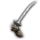 决战 全力投入战斗，永远能让你掌握主动权。 |
|
50 | 存在舰队 |
恶劣天气经验 根本没有什么坏天气…… |
恶劣天气惩罚：−40% | 50 | 贸易封锁 |
勇敢的指挥官 去他的鱼雷，全速前进！ |
|
50 | 存在舰队或主力舰猎手 |
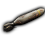 军械局 军械局会影响每一项舰船设计的制定。 |
鱼雷命中几率：−10% | 50 | |
海上绊索 没有谁吃海胆，这是有充分理由的。 |
|
50 | 贸易封锁或近海防御舰队 |
侦察部队 海洋辽阔。战斗的胜利通常属于先发现对方并果断出手的一方。 |
|
50 | 存在舰队或 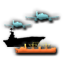 护航航母支援 |
舰队防御 战斗空中巡逻与轻型舰船的存在，就是为了让我们的主力能够不受粗暴干扰地完成任务。 |
|
50 | 基地打击或轻型特遣舰队 |
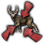 快速集结 如蝗群般迅速向敌人集结，用尽你手中的每一件武器开火：这是通往胜利的最快途径。 |
|
50 | 基地打击或快速战列舰 |
防空弹幕 如同古代的盾墙，战列舰队中的每艘舰船不仅要负责自身防御，还要支援相邻的舰船。 |
|
50 | 存在舰队或 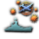 防空战列舰 |
选择性交战 傻瓜才会在强敌面前原地不动，任其将自己消灭。拒绝打你赢不了的仗。 |
|
50 | 贸易封锁或巡逻艇 |
空军精神
空军精神为飞机科研和空军任务提供加成
空军精神
| 精神（消歧义） | 效果 | XP | 前置条件 |
|---|---|---|---|
独立空军 空军是一个独立军种，与陆军或海军同等重要。 |
空军顾问花费：−75% | 50 | |
工业破坏 1000 架轰炸机只需一次出击就能改变战争走向。 |
|
50 | 战略毁灭 |
俯冲轰炸 干掉一艘平顶船。 |
|
50 | |
物资摧毁 摧毁装备并扰乱敌人的交通线，比造成再多伤亡都能更快地锁定胜局。 |
|
50 | 作战完整性 |
工业联络 只有航空工业、军方与政府之间毫无摩擦的合作，才能确保最高的质量。 |
|
50 | |
有效训练计划 什么都比不上一场良好的教育。 |
航空队训练经验获取：+25% | 50 | |
分支独立精神 陆军或海军的人别想对我们指手画脚。我们按自己的方式来。 |
|
50 | |
空勤人员调查 毕竟，装备是他们在用，为什么不问问他们呢？ |
|
50 |
空军指挥精神
| 精神（消歧义） | 效果 | XP | 前置条件 |
|---|---|---|---|
战场空中封锁 空中与地面部队之间的密切合作。 |
|
50 | |
舰载机夜间战斗 你觉得在黑暗中飞行就已经很难了？试试半夜在航空母舰上降落吧！ |
|
50 | |
资深飞行教官 让最优秀的人来训练其余的人。 |
被击落时的航空队经验损失：−25% | 50 | |
集中控制 有效的资源管理能确保飞机抵达最需要它们的地方。 |
|
50 | |
钢铁之翼，钢铁之心 在一万英尺高空作战，需要一种特别的勇气。 |
新航空队的未经训练飞行员惩罚：−33% | 50 | |
空降英雄 广袤的天空对于寻求功业的人来说蕴含着无限的希望。 |
王牌效能：+50% | 50 | |
空中力量投送 远离本土作战时，需要一种特别的胆识。 |
空中力量投送系数：+10% | 50 | |
集中打击 扰乱敌方地面部队是击败他们的最佳方式。 |
制空权: +5% | 50 | 作战完整性 |
持续打击 摧毁敌人关键装备至关重要。 |
空中支援任务效率: +25% | 50 | |
彻底毁灭 对敌人核心地带发动大规模战略打击，将摧毁其作战能力。 |
战略轰炸: +10% | 50 | 战略毁灭 |
注释与参考
^ a: 启用 唯有鲜血后，获得晋升的军官必须指挥正确的师类型。^ b: 地形特质包括
唯有鲜血后，获得晋升的军官必须指挥正确的师类型。^ b: 地形特质包括 冬季专家、
冬季专家、 沙漠之狐、沼泽之狐、
沙漠之狐、沼泽之狐、 山地兵、
山地兵、 山地战士、
山地战士、 丛林之鼠、
丛林之鼠、 游骑兵和
游骑兵和 城市突击专家。
城市突击专家。
| 政治 | 意识形态 • 阵营 • 国策 • 理念 • 政府 • 傀儡国 • 流亡政府 • 外交 • 世界紧张度 • 内战 • 占领 • 力量均势 |
| 生产 | 贸易 • 生产 • 建造 • 装备 • 燃料 • 军工组织 • 国际市场 |
| 科研与科技 | 科研 • 步兵科技 • 支援连科技 • 装甲科技（也包括 未拥有绝不后退）• 火炮科技 • 陆军学说 • 特种部队学说 • 海军科技（也包括 未拥有全民持枪）• Naval support科技 • 海军学说 • 空军科技（也包括 未拥有以血盟誓）• 空军学说 • Engineering科技 • Industry科技 • 特殊项目 • 科学家 |
| 军事与战争 | 战争 • 和平会议 • 陆军单位 • 陆战 • 师编制设计 • 坦克设计 • 陆军编制器 • 集团军 • 指挥官 • 作战计划 • 战斗战术 • 舰船 • 舰船设计（伦敦海军条约）• 海战 • 飞机设计 • 空战 • 经验 • 军官团 • 损耗与事故 • 后勤 • 人力 • 核弹 • 突袭 |
| 间谍活动 | 情报 • 情报机构 • 特工 • 任务 • 行动 |
| 地图 | 地图 • 省份 • 地形 • 天气 • 州 |
| 事件与决议 | 事件 • 决议 |